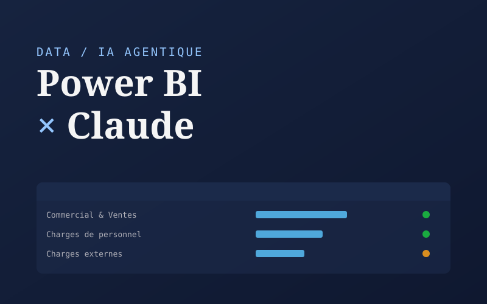
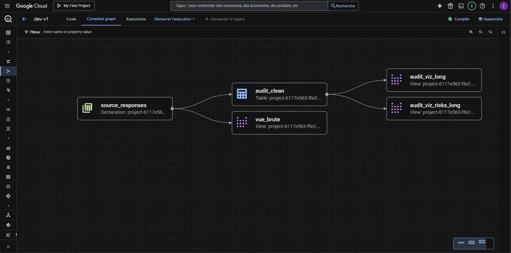
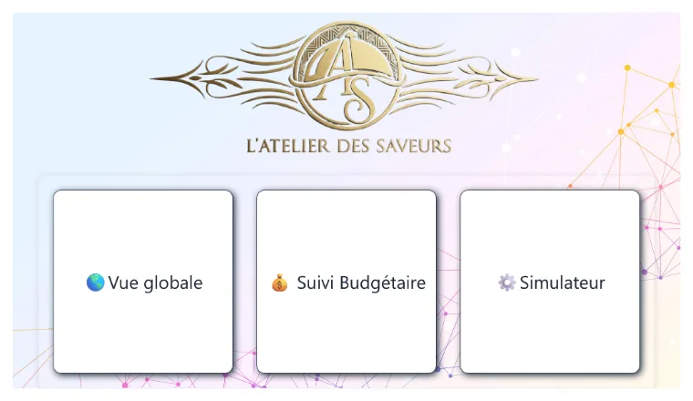

Réalisations
Autres projets

Power BI × Claude
Faire construire un rapport Power BI complet par une IA agentique (Claude Code) : dataset Python, modèle TMDL/DAX et débogage jusqu'au rendu vérifié.

Power BI — Analyse Immobilière
Simulateur d'achat et analyse du marché immobilier français sur la période 2019–2024, à partir des données data.gouv.

Power BI — Suivi Bancaire
Tableau de bord personnel de suivi des dépenses, flux financiers et comparaison budgétaire par catégorie.

Pipeline de données GCP
Pipeline cloud-native sur GCP : ingestion BigQuery, modélisation Dataform (style dbt) et visualisation Looker Studio.

Revue de presse automatisée
Génération automatique de revues de presse via flux RSS, résumé par IA (BART) et traduction, exportée en document Word.

Power BI — Dashboard Restauration
Dashboard analytique pour « L'Atelier des Saveurs » : vue globale, suivi budgétaire et simulateur de ventes.

Tableau — Analyse Financière
Analyse d'investissements et classification de profils d'investisseurs à partir d'un dataset Kaggle.

Excel — SIG, CAF & Ratios
Automatisation des états financiers : Soldes Intermédiaires de Gestion, Capacité d'Autofinancement et ratios comptables.
Recherche & démos
Travaux complémentaires
Mémoire M2 — IA générative en audit
Étude empirique de la perception et de l'adoption de l'IA générative en cabinet d'audit. 67 répondants, modèle TAM enrichi, tests de Spearman, alpha de Cronbach.
Lire le mémoire →Explorateur open data
Outil d'exploration des jeux de données publics français (data.gouv.fr), avec recherche guidée et visualisations.
Découvrir l'outil →